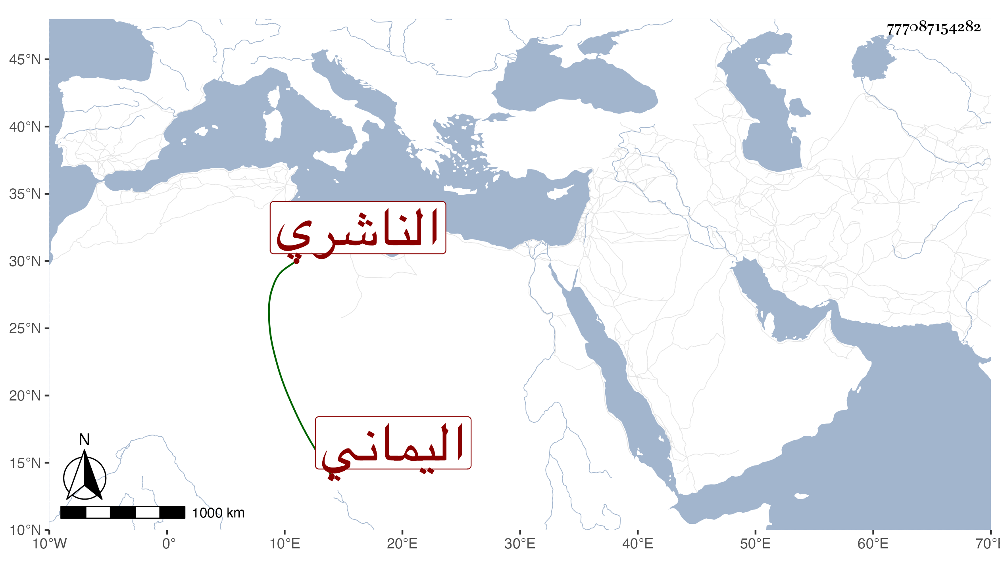

0902Sakhawi.DawLamic.ITO20230111-ara1.EIS1600.777087154282
Biography ID: 777087154282
289
محمد بن عبد المجيد بن القاضي أبي الحسن علي بن أبي بكر الجمال الناشري اليماني . ولد سنة تسع وثلاثين وثمانمائة وحفظ الشاطبية والمنهاج الفرعي وألفية ابن مالك وتفهمهما بجد واجتهاد حتى تميز وتعين وكانت أوقاته موزعة على التكرير على محفوظاته والمطالعة عليها والكتابة وأنواع الطاعات مع ذكاء وفهم ونسك وعلم . مات في ربيع الثاني سنة إحدى وسبعين . أفاده لي بعض الفضلاء الآخذين عني .
